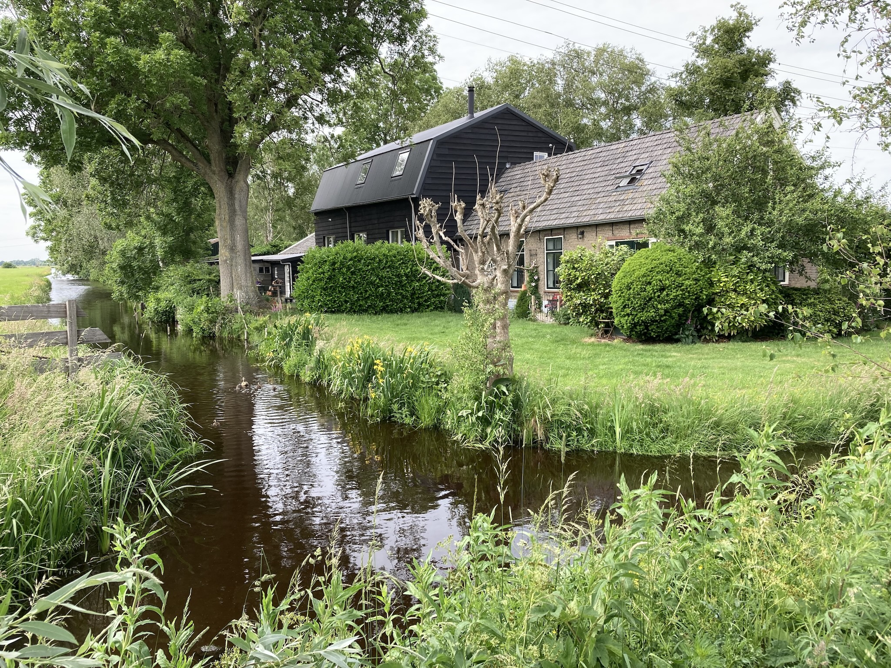
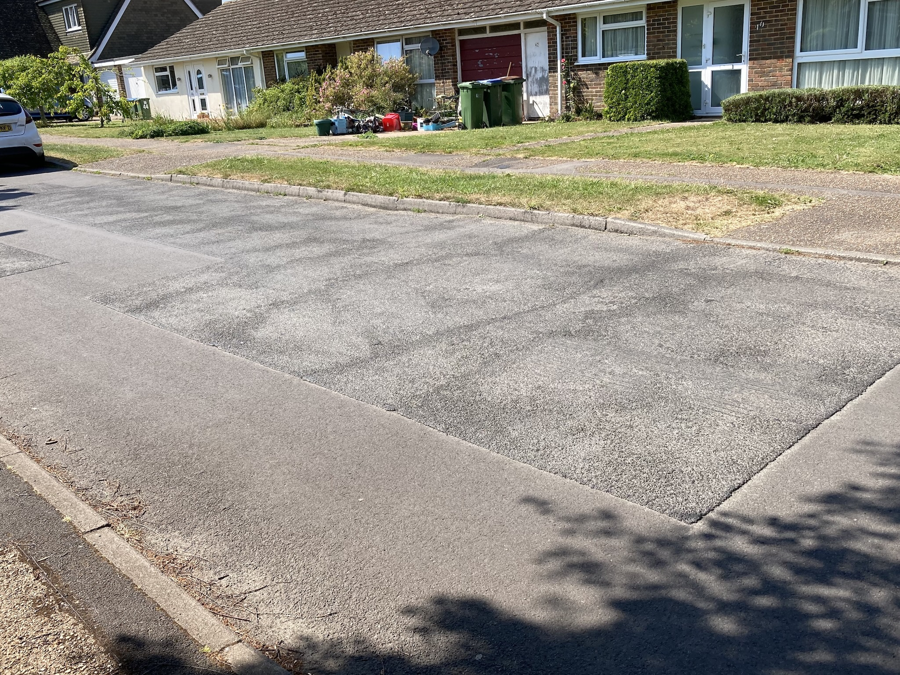

We spent Easter with our son and his family in the Netherlands. They live between Rotterdam and Goude in a region where the roads are single-track with passing places and hump-back bridges over the sloten (drainage ditches). Where they live, there are no hedges between the fields, just a water filled ditch, so at first it looks like one big field, with sheep and cattle miraculously keeping to their own area. It can be a little disconcerting walking or driving along the dykes that separate the rivers (such as the IJssel and the Lek) from the surrounding land. You suddenly realise that the land is quite a few feet below the level of the river! Luckily the Dutch seem quite good at water engineering.
Around our son’s converted barn there are many miles of this single track road, with little in the way of buildings along the way. Nevertheless, the road surfaces are completely smooth, as are the main roads that join the more major towns. One thing that helps is that there is no ironwork in the road. All the manhole covers are put to the side or on the footpaths. The Dutch also seem to have a schedule for completely replacing the road surfaces.
Within our area of the UK I’ve recently notices a change of strategy when it comes to filling potholes. Rather than just plonking a bit of tar macadam in the hole and stamping on it, they seem to be scraping off a rectangular area of the road surface and laying a new surface. This would seem to be a move in the right direction. However, those who are employed to lay this new surface over the rectangles, such as those that can be seen in the photo, seem incapable of making them smooth. Modern suspension may make light work of the undulations and bumps, but when using the TC it is like driving over corrugated iron sheets!
And it’s not just the back roads. Patches installed on the main A road between Steyning and Washington are just as bad. One club member suggested that we should get the person responsible for maintaining the local roads to take a ride in a 1940’s car over some of the ‘patched’ surfaces. Perhaps then they would realise what they are getting for the money that is being spent.
I must admit that I would really like to drive our TC on Dutch roads.
(Written 16th May 2025; published in WSMGOC Main Gear, Month Year.)
© David James 2025 Last updated: 27th May 2025